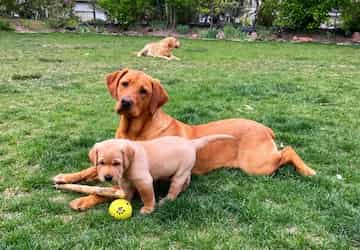

Isaac Williams
My Dog Sawny
Sawny has wat you could say a strong personality. She wan'ts what she wants and won't settle for less. Sanwy will also do her best to make sure you know what it is that she wants, whether that is by jumping up and down or scratching on doors.
Regardless of Sawny’s flaws, she is still a part of my family, and that will never change. On the outside, she may seem like she’s the one running the show, but deep down, there’s a part of her that resembles a small, frightened puppy, eager to please and hoping to be loved.
My Dog Foxy

My dog Foxy is the best. She is exiting and crazy at sometimes and loves to play. But she will quickly calm down if you ask her to. Also she loves toys, more than anything else.